Welcome to My Jackie Chan FanPage!
This website will showcase Jackie Chan's biography, clips of his famous movies. a list of his top movies, his famous movie quotes, and lastly a photo gallery throughout the years of his work in the film industry
Let's start off with Jackie Chan's journey into the film industry as you click on his
Biography
Here are Jackie Chan's most memorable clips showcasing his parkour, fighting skills including some funny moments outside the film industry
Here.
Some Fun Facts
- Jackie Chan was Born in Victoria Peak, Hong Kong
- Jackie Chan has won 50 Awards
- Jackie Chan personally holds two Guinness World Records that were awarded to him December 5, 2012. He holds the records of Most credits in one movie and Most stunts by a living actor. The first record was made by him with the movie Chinese Zodiac (2012) where he carried out 15 of the major creative movie-making roles for the film including Director, Producer, Actor, Fight Choreographer and Composer, breaking the previous record of 11 credits held by Robert Rodriguez.
- He created Sing Kar Pan, his very own stunt team. This occurred after he struggled to get himself insured, especially in the U.S. Having broken his nose, knocked out a tooth, lacerated his lip, dislocated his shoulder and endured many more injuries, it’s easy to imagine that insurance companies would be dubious.
- In 1988, Chan established the Jackie Chan Charitable Foundation to support young people through scholarships, youth activities, medical services, and aid to victims of natural disasters or illness.
- In addition to all that singing, he can speak Mandarin, Cantonese, English, German, Korean, Japanese, Thai and American Sign Language.
- The movie star has served as a UNICEF Goodwill Ambassador since 2004
- in 2015, he was named Singapore's first anti-drug ambassador.
Antimated movies voiced*
| Movie title |
Year released |
Streaming platform |
Worldwide box office earned |
Trailer link |
| Rush Hour |
1998 |
Netflix |
$244,721,064 |
Rush Hour trailer |
| The Karate Kid |
2010 |
Peacock |
$359,126,022 |
The Karate Kid trailer |
| Shanghai Noon |
2000 |
Amazon Prime Video |
$99,274,467 |
Shanghai Noon trailer |
| Rush Hour 2 |
2001 |
Netflix |
$347,325,802 |
Rush Hour 2 trailer |
| SuperCop |
1992 |
Amazon Prime Video |
$34,391,494 |
Super Cop trailer |
| Kung Fu Panda* |
2008 |
Peacock |
$632,384,787 |
Kung Fu Panda trailer |
| Teenage Mutant Ninja Turtles: Mutant Mayhem* |
2023 |
Paramount Plus |
$181,935,518 |
Teenage Mutant Ninja Turtles: Mutant Mayhem trailer |
Jackie Chan Photo Gallery
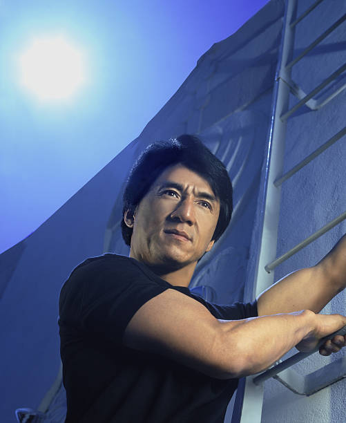
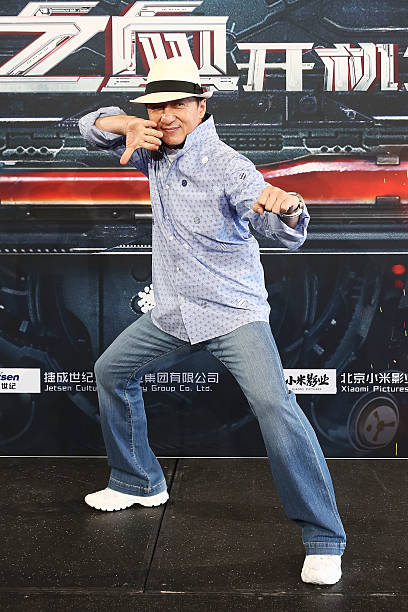
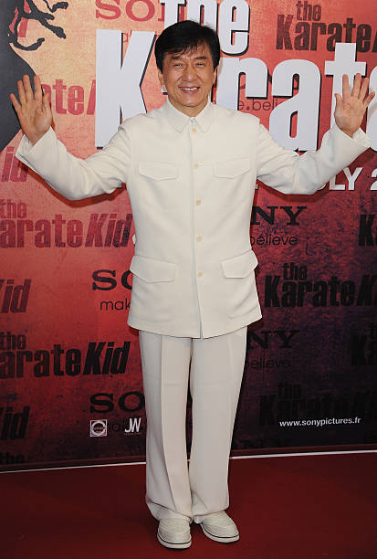
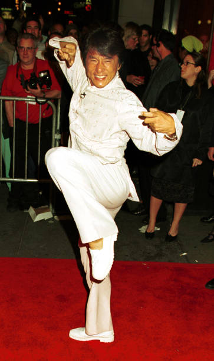
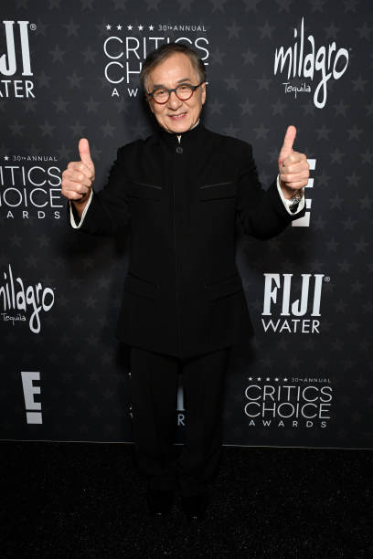
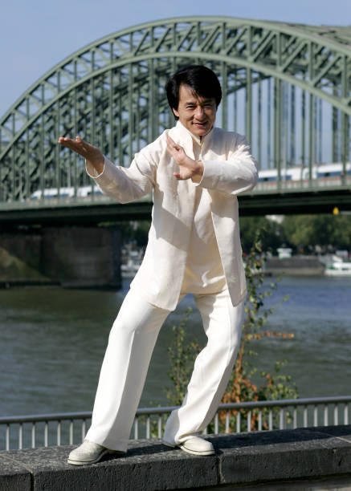
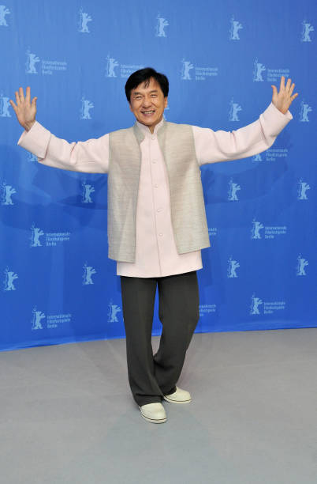
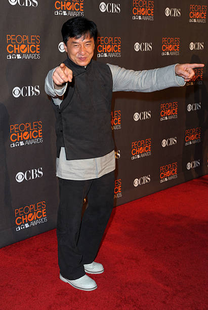
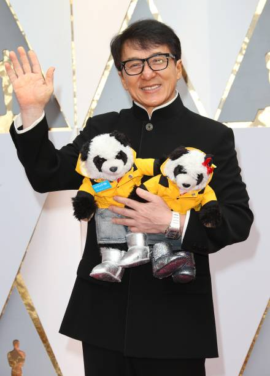
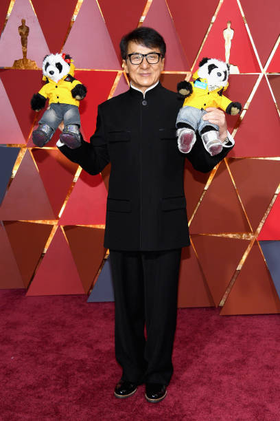
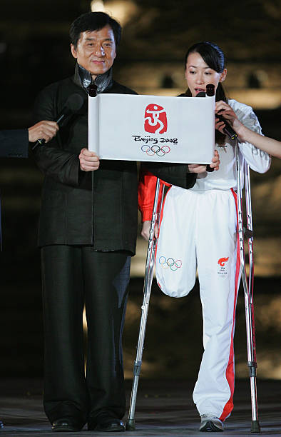
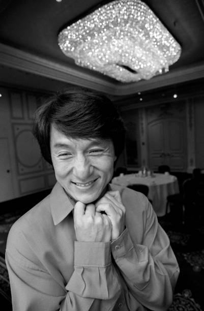